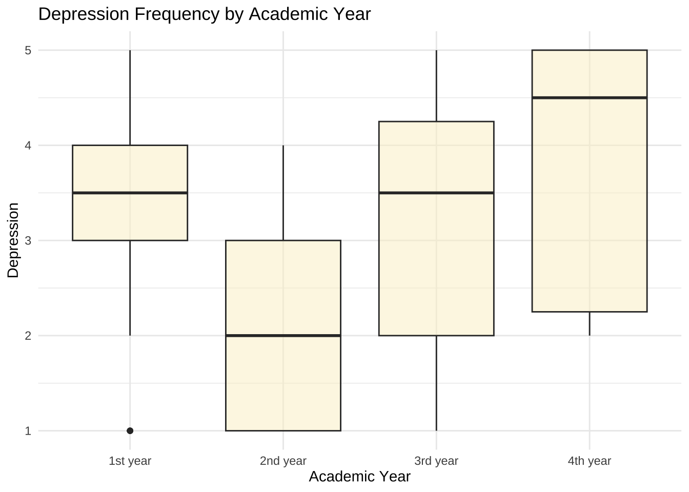
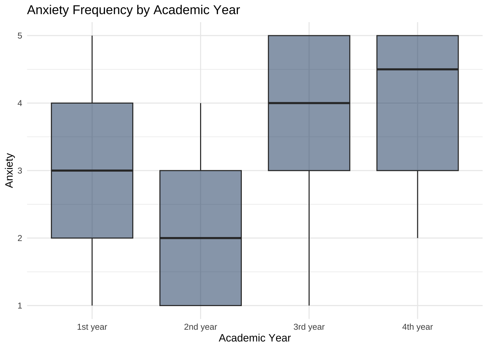
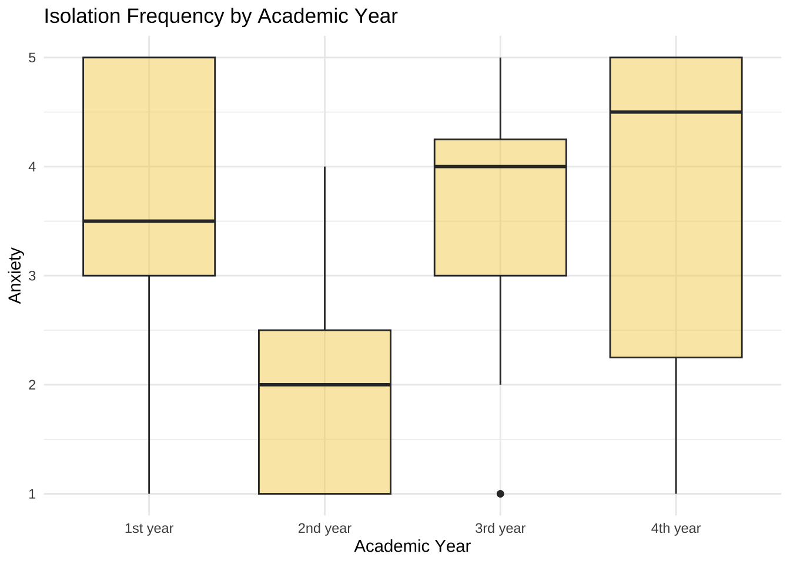
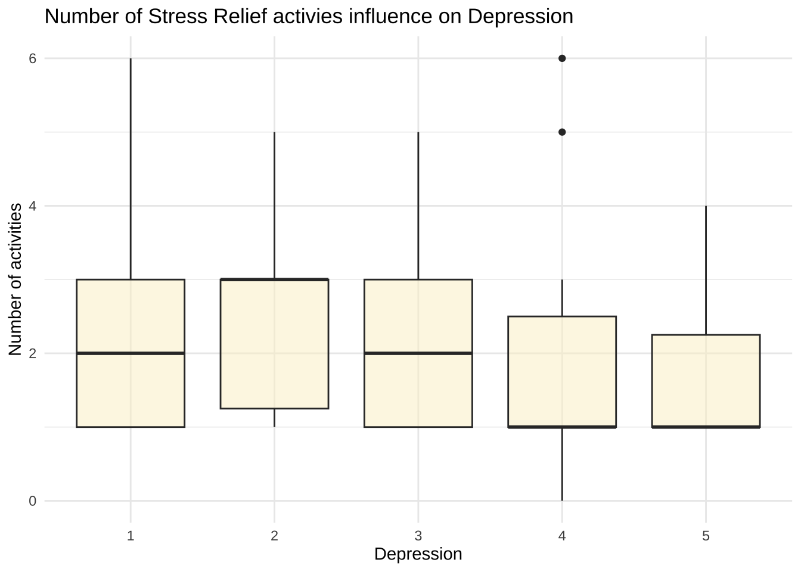
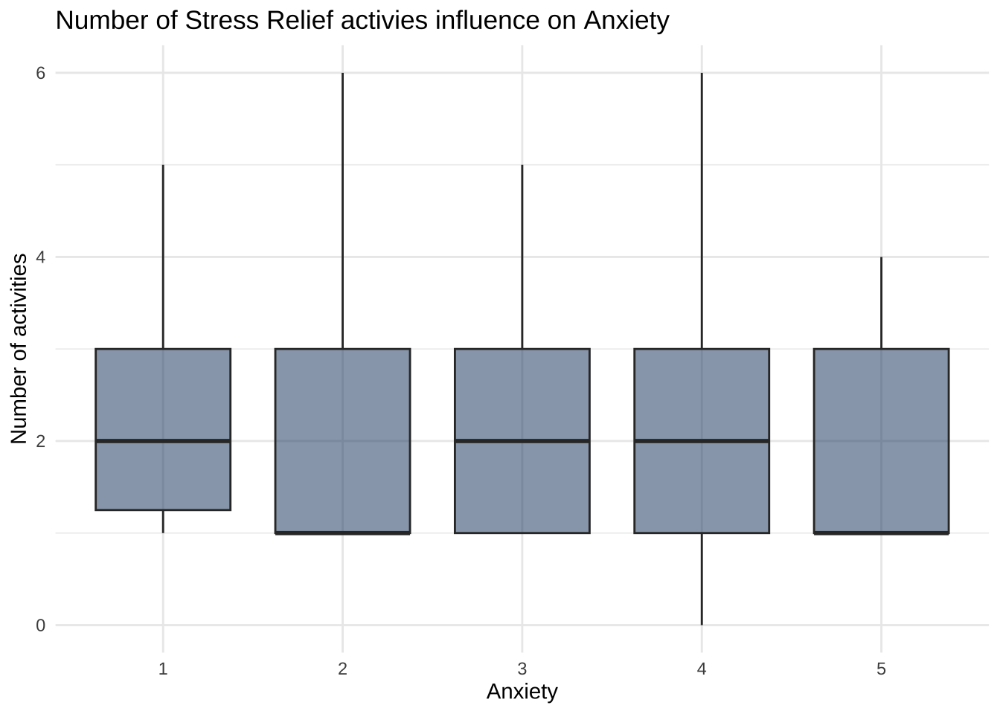
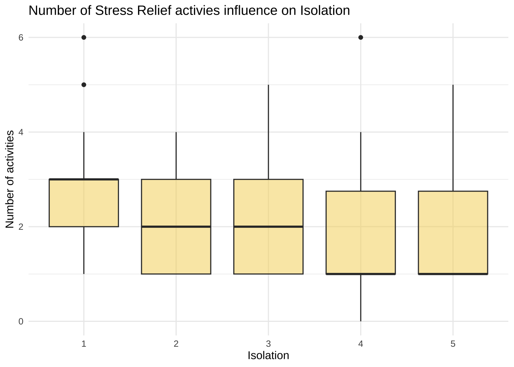
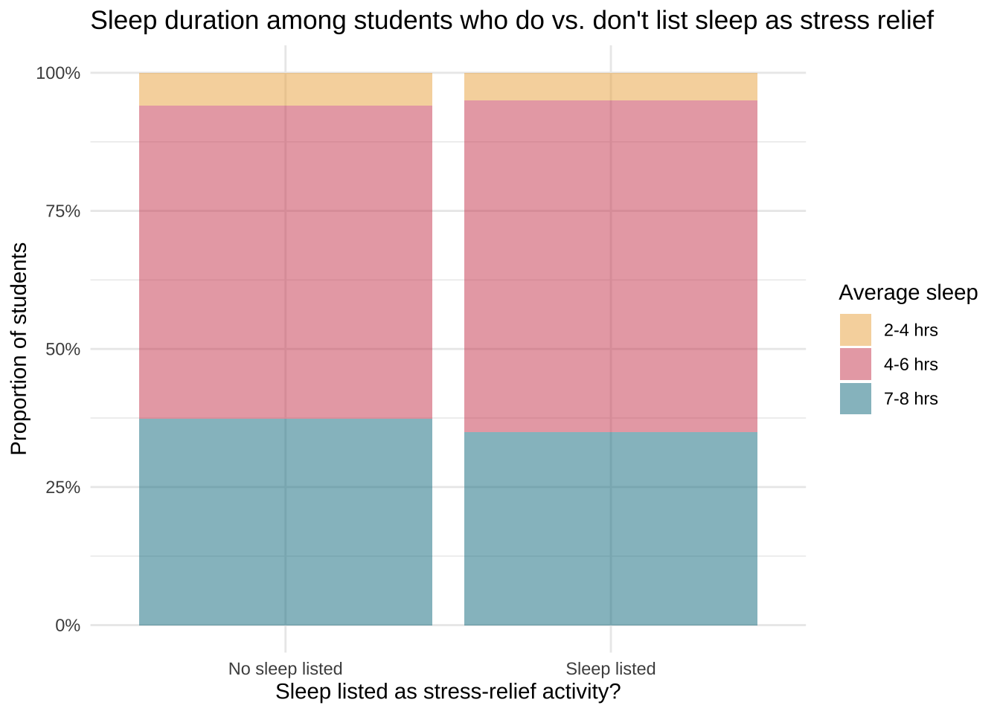

# read in dataMentalHealthSurvey <-read_csv("data/raw/MentalHealthSurvey.csv")
College is known for being difficult, especially so for technology majors. All that stress is bound to take a toll on the mental fortitude of students. Depression, anxiety and isolation are issues that are known to plague students. Could academic pressure be to blame? Or are there other variables at play that can lower or raise these conditions?
This data set from Kaggle focuses on Computer Science, Data Science, Software Engineering and Information technology majors. It spans all 4 academic years and contains a multitude of self reported measures, including depression, anxiety and isolation. Mental health and future insecurity are scaled 1-5 based on frequency, with 5 being the most frequent. In contrast all other variables scored 1-5 are graded based on difficultly with 5 being the most difficult. In addition to these self reported variables the dataset contains a multitude of information on the condition of students lives that could provide insight into what technology students feel and why they are feeling it.
ggplot(Organized_data, aes(x =factor(Metric, levels = desired_order), y = value, fill = scale_system)) +geom_bar(stat ="identity", width =0.7) +geom_text(data = Organzied_Data_labs, aes(y = pos, label = value), colour ="white", size =5, family ="RobotoCondensed", face ="bold") +coord_flip() +scale_fill_manual(values =c("1"="#f45b5b", "2"="#f4a261", "3"="gray70","4"="#4ea8de", "5"="#0077b6"), limits =c("1", "2", "3", "4", "5") ) +scale_y_continuous(labels = abs) +labs(title ="Students Rating of Mental Health and College Factors on a Scale of 1-5",fill ="Level:",y =NULL, x =NULL ) +theme_minimal(base_size =14) +theme(panel.grid.major.y =element_blank(),panel.grid.minor =element_blank(),axis.title.y =element_blank(),legend.position ="top",plot.title =element_text(size =20, face ="bold", color ="#2a4d69", hjust =0.5, family ="RobotoCondensed"), plot.margin =unit(c(1, 2, 1, 1.5), "cm"), axis.text.y =element_text(size =15, family ="RobotoCondensed", face ="bold"), legend.text =element_text(family ="RobotoCondensed", size =14), legend.title =element_text(family ="RobotoCondensed", size =15) )
There was a relatively even distribution into how many students said they fell into each mental health category with in this study. Although the lower categories have slightly less, the upper three categories have similar percentages which demonstrates a variety of mental health experiences. In contrast we can see that a large percentage of the students found that academic workload and pressure was high. This could be due to their majors or the fact college is hard in general, but it is an interesting contrast to the mental health distribution. Future insecurity is the most evenly distributed across categories, further highlighting the vast variety of experiences and thoughts encompassed in this data set.
This plot shows a correlation heatmap examining how academic workload and perceived pressure relate to different mental-health outcomes among mainly stem students. The warmer colors represent stronger positive correlations, meaning that as one variable increases, the other tends to increase as well. Cooler purple colors indicate negative correlations, meaning that as one increases, the other tends to decrease. One of the strongest relationships we found was between depression and anxiety, with a correlation of .84, suggesting these experiences often occur together. We also see that academic workload and academic pressure are moderately correlated with depression, anxiety, and feelings of isolation, supporting our hypothesis that heavier academic stress is associated with poorer well-being, but maybe not as strongly as originally believed. On the opposite side, study satisfaction is negatively correlated with all mental-health outcomes. This suggests that students who feel more satisfied and supported in their studies tend to report fewer negative well-being symptoms. Overall, these patterns indicate a clear connection between academic stress and mental health in this student population, and they help us identify which variables may be most important for further analysis.
Academic workload
Code
table <- MentalHealthSurvey |>summarise("Depression"=mean(depression), "Anxiety"=mean(anxiety), "Isolation"=mean(isolation), "Academic Workload"=mean(academic_workload))gt(table) |>tab_header(title ="Mean mental health and Academic workload" ) |>fmt_number(decimals =2 )
Mean mental health and Academic workload
Depression
Anxiety
Isolation
Academic Workload
3.22
3.22
3.24
3.89
This table demonstrates that for all the students in the study average depression and anxiety are 3.2, which means that the frequency of these feelings is sometimes. Mean isolation is around the same frequency while academic workload is perceived as high and difficult on average. This hints that there might be a possible relationship between the two, but we cannot state that definitely from just the means. This is why we look at various points of interest across our report.
Sports Engagement
Code
table <- MentalHealthSurvey |>group_by(sports_engagement) |>summarise("Depression"=mean(depression), "Anxiety"=mean(anxiety), "Isolation"=mean(isolation), "Academic Workload"=mean(academic_workload)) |>rename("Sports Engagement"= sports_engagement )gt(table) |>tab_header(title ="Mean Mental Health and Academic workload by Sports Engagement per week" ) |>fmt_number(decimals =2 )
Mean Mental Health and Academic workload by Sports Engagement per week
Sports Engagement
Depression
Anxiety
Isolation
Academic Workload
1-3 times
3.04
3.42
3.08
4.21
4-6 times
2.09
2.09
2.18
3.18
7+ times
3.40
3.10
3.20
3.70
No Sports
3.57
3.43
3.62
3.93
If you look at sports engagement there is a general trend the more they are engaged the less they feel depression, anxiety, and isolation. However once you get into doing sports 7+ times a week then it shoots up again, most likely because there is less time to spend doing other things such as stress relieving activities. Interestingly perceive academic workload is highest in people who have the lowest sports engagement or do not sports, which could demonstrate more value and time placed into academic endeavors. While an intersting finding, it is one part of a puzzle.
Campus Discrimination
Code
table <- MentalHealthSurvey |>group_by(campus_discrimination) |>summarise("Depression"=mean(depression), "Anxiety"=mean(anxiety), "Isolation"=mean(isolation), "Academic Workload"=mean(academic_workload)) |>rename("Discrimination"= campus_discrimination )gt(table) |>tab_header(title ="Mean Mental Health and Academic workload depending on Campus Discrimination" ) |>fmt_number(decimals =2 )
Mean Mental Health and Academic workload depending on Campus Discrimination
Discrimination
Depression
Anxiety
Isolation
Academic Workload
No
3.06
3.09
3.12
3.91
Yes
3.68
3.59
3.59
3.82
This statistic clearly shows that those who experience campus discrimination have more frequently experience mental health issues. However campus discrimination has no extremely describable impact on how difficult they perceive their workload. This eludes to how multiple pressures effect mental health and it is hard to quantify the effects of just academics. While this data set did not have more information on this statistic, it would be an interesting relationship to investigate in the future.
Residental Status
Code
table <- MentalHealthSurvey |>group_by(residential_status) |>summarise("Depression"=mean(depression),"Anxiety"=mean(anxiety), "Isolation"=mean(isolation), "Academic Workload"=mean(academic_workload)) |>rename("Residential"= residential_status )gt(table) |>tab_header(title ="Mean Mental Health and Academic workload depending on Residential Status" ) |>fmt_number(decimals =2 )
Mean Mental Health and Academic workload depending on Residential Status
Residential
Depression
Anxiety
Isolation
Academic Workload
Off-Campus
3.23
3.26
3.29
3.83
On-Campus
3.18
3.09
3.09
4.05
This table demonstrates that individuals living off-campus have slightly worse mental health, but not an extreme amount. There is also a similar small difference in academic workload but in the opposite direction. This difference could be due to how dorms provide a sense of community that could be comforting but are closely tied to campus and academics. However, considering how miniscule the difference is this conclusion is not very meaningful.
Major
Code
table <- MentalHealthSurvey |>group_by(degree_major) |>summarise("Depression"=mean(depression), "Anxiety"=mean(anxiety), "Isolation"=mean(isolation), "Academic Workload"=mean(academic_workload)) |>rename("Major"= degree_major )gt(table) |>tab_header(title ="Mean Mental Health and Academic Workload by Major" ) |>fmt_number(decimals =2 )
Mean Mental Health and Academic Workload by Major
Major
Depression
Anxiety
Isolation
Academic Workload
Computer Science
3.50
3.68
3.47
4.03
Data Science
2.90
2.68
2.88
3.80
Information Technology
3.22
3.56
3.56
3.56
Software Engineering
4.33
4.33
4.67
4.33
Looking at the different majors they surveyed we can see that academic workload is perceived as relatively high regardless of major, but general trend is Software Engineering being the hardest followed by Computer Science, Data Science and Information Technology. Software Engineering and Computer Science follows the same pattern, however information technology is higher on all mental health levels than data science. These trends match up relatively well to academic workload, data science being the exception. This demonstrates that academic workload could be considered possibly a good prediction in mental health depending on the major.
Mean Mental Health & Academic Workload by Academic Year
Year
Depression
Anxiety
Isolation
Acadmeic Workload
1st year
3.32
3.12
3.50
3.79
2nd year
2.27
2.27
1.93
3.67
3rd year
3.39
3.61
3.46
4.18
4th year
3.80
3.90
3.70
3.70
This table demonstrates the differences in mental health my academic year. Here we find that although academic workload stays within .5 for all the means regardless of year, there is larger fluctuations in mental health categories. The Academic workload does increase from sophmore to senior year which follows the same trend of mental health just not to the same scale. These trends in mental health are futher demonstrated in the visualizations below.
Depression
Code
MentalHealthSurvey |>ggplot(aes(x = academic_year, y = depression)) +geom_boxplot(fill ="#faf0ca80") +labs(title ="Depression Frequency by Academic Year",x ="Academic Year",y ="Depression" ) +theme_minimal()

Anxiety
Code
MentalHealthSurvey |>ggplot(aes(x = academic_year, y = anxiety)) +geom_boxplot(fill ="#0d3b6680")+labs(title ="Anxiety Frequency by Academic Year",x ="Academic Year",y ="Anxiety") +theme_minimal()

Isolation
Code
MentalHealthSurvey |>ggplot(aes(x = academic_year, y = isolation)) +geom_boxplot(fill ="#f4d35e80")+labs(title ="Isolation Frequency by Academic Year",x ="Academic Year",y ="Anxiety") +theme_minimal()

There are elevated levels of both depression, anxiety, and isolation, among first-year students, followed by a noticeable dip in the second year, and then a steady rise through the third and fourth years. This pattern may reflect the initial transition-related stress experienced by first-year students, a temporary adjustment period in the second year, and then a gradual increase in academic pressure, workload, and future-oriented stress as students progress toward graduation.
GPA
Code
table <- MentalHealthSurvey |>group_by(cgpa) |>summarise("Depression"=mean(depression), "Anxeity"=mean(anxiety), "Isolation"=mean(isolation), "Academic Workload"=mean(academic_workload)) |>rename("GPA"= cgpa )gt(table) |>tab_header(title ="Mean Mental Health and Academic Workload by Academic Year" ) |>fmt_number(decimals =2 )
Mean Mental Health and Academic Workload by Academic Year
GPA
Depression
Anxeity
Isolation
Academic Workload
0.0-0.0
3.00
3.20
3.40
4.20
1.5-2.0
4.50
4.00
4.50
4.00
2.0-2.5
2.25
2.75
3.25
4.25
2.5-3.0
3.14
3.32
3.27
3.95
3.0-3.5
3.15
2.93
2.85
3.85
3.5-4.0
3.44
3.44
3.48
3.74
While this data seems to have extremely interesting trends for those with lower gpas it is important to note that 5 people have a cumulative GPA of 0.0 - 0.0 and only 2 students have a cumulative GPA of 1.5-2.0, which skews those data points. Looking at GPA we can see from 2.0 up there is a rough trend in increasing depression. When looking at anxiety there is roughly the same trend except people with a 3.0-3.5 cgpa tend to have a slightly lower anxiety level. This could be that because they fall within this range the pressure to perform extremely well is lowered. Isolation follows that same trend. These trends are further emphasized in the box plot below.
Here we can clearly see that there is in fact large variability in the mental health of students who fall into the top 3 gpa categories. In fact that variability grows larger as GPA increases. In the top GPA category 3.5-4.0, we can see that students tend to rate anxiety and depression a 4-5. However, they are more variable in their reports of how frequently they experience isolation. Within the GPA category 3.0-3.5 we can see that students in that category tend to rate their anxiety more between a 2-3, which is reflected in the mean above. However their frequency of depression and isolation tends to have an almost even distribution across all categories. This demonstrates that students within this GPA category have extremely variable mental health experiences, which could be due to other factors of their life. Lastly looking at 2.5-3.0 range we can see that they in fact tend to score anxiety higher than those in the category above them. Their depression trends a slight more middle distribution than even, meaning mroe students fall within that middle area for depression. Similar to students in the category above them they most likely have a diverse expereience with mental health that could be less effected by academics which is impacting these results.
Number of Stress Relief activities
Code
table <- MentalHealthSurvey |>mutate(NumberActivities =case_when( stress_relief_activities =="Nothing"~0,TRUE~str_count(stress_relief_activities, ",") +1 ) ) |>group_by(NumberActivities) |>summarise("Depression"=mean(depression), "Anxiety"=mean(anxiety), "Isolation"=mean(isolation)) |>rename("Number of Actvities"= NumberActivities ) gt(table) |>tab_header(title ="Mean Mental Health by Number of Stress Releiving Activities" ) |>fmt_number(decimals =2 )
Mean Mental Health by Number of Stress Releiving Activities
Number of Actvities
Depression
Anxiety
Isolation
0.00
4.00
4.00
4.00
1.00
3.41
3.33
3.64
2.00
3.20
3.07
2.87
3.00
2.89
3.00
2.79
4.00
3.25
3.62
3.25
5.00
3.00
2.67
3.00
6.00
2.50
3.00
2.50
Looking at the number of activities that people engage with we can see that there is a general trend that as a person goes from 1 to 2 to 3 activities they begin to lower all their mental health categories. However afterwords the relationship between number of activies and relationship to mental health categories begins to falter. This could be due to the fact that having more hobbies means that you stress yourself trying to make time for them all. It could also be that less students do 6 stress relieving activities, meaning that they are not meaningful representations of a large number of students. It is important to note that the the category with 0 activities consists of one person and is not reliable.
Code
MentalHealthSurvey |>mutate(NumberActivities =case_when( stress_relief_activities =="Nothing"~0,TRUE~str_count(stress_relief_activities, ",") +1 ) ) |>mutate(depression =as.character(depression) ) |>group_by(NumberActivities) |>ggplot(aes(x = depression, y = NumberActivities)) +geom_boxplot(fill ="#faf0ca80") +labs(x ="Depression", y ="Number of activities", title ="Number of Stress Relief activies influence on Depression") +theme_minimal()

Code
MentalHealthSurvey |>mutate(NumberActivities =case_when( stress_relief_activities =="Nothing"~0,TRUE~str_count(stress_relief_activities, ",") +1 ) ) |>mutate(anxiety =as.character(anxiety) ) |>group_by(NumberActivities) |>ggplot(aes(x = anxiety, y = NumberActivities)) +geom_boxplot(fill ="#0d3b6680") +labs(x ="Anxiety", y ="Number of activities", title ="Number of Stress Relief activies influence on Anxiety") +theme_minimal()

Code
MentalHealthSurvey |>mutate(NumberActivities =case_when( stress_relief_activities =="Nothing"~0,TRUE~str_count(stress_relief_activities, ",") +1 ) ) |>mutate(isolation =as.character(isolation) ) |>group_by(NumberActivities) |>ggplot(aes(x = isolation, y = NumberActivities)) +geom_boxplot(fill ="#f4d35e80") +labs(x ="Isolation", y ="Number of activities", title ="Number of Stress Relief activies influence on Isolation") +theme_minimal()

These boxplots demonstrate that students who experience mental health conditions at different frequencies tend to have the same number of stress relieving activities. Although the relative mean number of activies tends to show a possible trend for isolation and depression, the overlapping boxs indicate that it is not an extremely meaningful conclusion. There is to much overlap in the range for us to conclusivly say that the number of stress relieving activties a student does has a profound impact on their mental health. However, perhaps the type of activity that they do is more meaningful.
There is a variety of categories that students placed their hobbies into. Hobbies that fell into online entertainment, religious activities and social connections so the most variablity in mental health across the board. This suggest that these hobbies might not have as meaningful impacts upon students mental health as the other categoires. Sports fitness while a little variable, is more even than the remaining 3 variables. Those who use sports and fitness as a stress relieving activity seemingly tend to rate their mental health around a 3. Creative outlets is the variable with the smallest range which all students who have this hobby rating their mental health a 3 or above. These students seemingly tend to have high anxiety. It is unclear why this is a major trend. In comparison, students who practice outdoor activities tend lower in their average mental health. They especially seem to have low anxiety. Their depression and isolation frequency tends towards the middle. This is likely because being outside has long proven stress relieving properties. Lastly, sleep has an uneven distribution with their average mental health falling high towards 4. Similar to those with creative outlets they tend to have high anxiety, while thier depression and isolation has uneven distributions. It is unclear as to why students who mark sleep as a stress releving activity tend to be more anxious.
Sleep as a Stress Relief Activity
Code
# 1. Create a variable: did they list sleep as a stress-relief activity?MentalHealthSurvey <- MentalHealthSurvey %>%mutate(sleep_relief =str_detect(str_to_lower(stress_relief_activities), "sleep"),sleep_relief =if_else(sleep_relief, "Sleep listed", "No sleep listed") )
ggplot(MentalHealthSurvey, aes(x = sleep_relief, fill = average_sleep)) +geom_bar(position ="fill") +scale_y_continuous(labels = scales::percent) +scale_fill_manual(values =c("#EDAE4980", "#D1495B80", "#00798C80")) +theme_minimal() +labs(title ="Sleep duration among students who do vs. don't list sleep as stress relief",x ="Sleep listed as stress-relief activity?",y ="Proportion of students",fill ="Average sleep" )

When comparing students who listed sleep as a stress-relief activity with those who did not, it is expected to see meaningful differences in their actual sleep duration. However, both groups showed nearly identical sleep patterns: most students reported only 4–6 hours of sleep per night, and the proportion achieving 7–8 hours was similarly small across groups. Notably, students who identified sleep as a coping strategy were not any more likely to obtain sufficient rest. This mismatch between students’ intended coping behaviors and their real constraints suggests that knowledge of healthy strategies alone is insufficient—structural pressures such as heavy workloads and scheduling demands may limit students’ ability to engage in effective self-care. This insight adds to the broader narrative that multiple, interacting factors shape mental-health outcomes in high-pressure academic environments.
Across all four mental-health outcomes—anxiety, depression, isolation, and future insecurity—students who reported sleeping fewer than six hours per night showed consistently higher symptom levels. In contrast, those sleeping between six and eight hours reported noticeably lower distress, suggesting that even moderate increases in sleep duration may serve as a protective factor. These patterns were especially pronounced for anxiety and isolation, where median scores were substantially higher among short-sleepers. Together, these findings underscore the large diversity of factors shaping technology students’ mental health and highlight sleep as a meaningful contributor within this broader landscape.
Conclusion
A variety of factors play into student mental health. Academic difficultly and how much work a student is doing certainly plays a role in their mental health. However, a single variable cannot be pinpointed as the only reason for students to feel mental health conditions. The pieces of people life as well as their dispositions work in various ways to contribute to mental health. Regardless, we cannot dismiss academic difficultly and other aspects. It is crucial to give students the support they need to thrive academically but also personally.
---title: "Final Report"---```{r}# Load necessary librarieslibrary(tidyverse)library(janitor) library(viridisLite)library(stringr)library(readr)library(skimr)library(psych)library(GGally)library(extrafont)library(showtext)library(ggcorrplot)library(dplyr)library(gt)library(purrr)library(grid)library(patchwork)library(ggh4x)``````{r}# read in dataMentalHealthSurvey <-read_csv("data/raw/MentalHealthSurvey.csv")```College is known for being difficult, especially so for technology majors. All that stress is bound to take a toll on the mental fortitude of students. Depression, anxiety and isolation are issues that are known to plague students. Could academic pressure be to blame? Or are there other variables at play that can lower or raise these conditions? This data set from Kaggle focuses on Computer Science, Data Science, Software Engineering and Information technology majors. It spans all 4 academic years and contains a multitude of self reported measures, including depression, anxiety and isolation. Mental health and future insecurity are scaled 1-5 based on frequency, with 5 being the most frequent. In contrast all other variables scored 1-5 are graded based on difficultly with 5 being the most difficult. In addition to these self reported variables the dataset contains a multitude of information on the condition of students lives that could provide insight into what technology students feel and why they are feeling it. ## Percent Students in each Category```{r}font_add(family ="RobotoCondensed", regular ="data/raw/Roboto_Condensed/static/RobotoCondensed-Regular.ttf",bold ="data/raw/Roboto_Condensed/static/RobotoCondensed-Bold.ttf")showtext_auto()``````{r}percent_calc <-function(column_name) { MentalHealthSurvey |>count({{column_name}}) |>mutate(column_level = (n /sum(n)) *100) |>rename(scale_system = {{column_name}}) |>select(scale_system, column_level) |>as.data.frame()}``````{r}Depression <-percent_calc(depression) |>rename(depression = column_level)Anxiety <-percent_calc(anxiety) |>rename(anxiety = column_level)Isolation <-percent_calc(isolation) |>rename(isolation = column_level)Workload <-percent_calc(academic_workload) |>rename(academic_workload = column_level)Pressure <-percent_calc(academic_pressure) |>rename(academic_pressure = column_level)Satisfaction <-percent_calc(study_satisfaction) |>rename(study_satisfaction = column_level)Insecurity <-percent_calc(future_insecurity) |>rename(future_insecurity = column_level)Organized_data <-left_join(Depression, Anxiety) |>full_join(Isolation) |>full_join(Workload) |>full_join(Pressure) |>full_join(Satisfaction) |>full_join(Insecurity) |>pivot_longer(names_to ="Metric", cols =c(depression, anxiety, isolation, academic_workload, academic_pressure, study_satisfaction, future_insecurity)) |>mutate(value =case_when(is.na(value) ~0, TRUE~ value )) |>mutate(scale_system =factor(scale_system, levels =c("1", "2", "3", "4", "5")),value =case_when( scale_system %in%c("1", "2", "3") ~-value,TRUE~ value ) ) |>mutate(value =round(value) ) |>mutate(scale_system =factor(scale_system, levels =c("5", "4", "1", "2", "3"))) Organized_data$Metric <-recode(Organized_data$Metric, "depression"="Depression", "anxiety"="Anxiety", "isolation"="Isolation", "academic_workload"="Academic Workload", "academic_pressure"="Academic Pressure","study_satisfaction"="Study Satisfaction", "future_insecurity"="Future Insecurity" )``````{r}Organzied_Data_labs <- Organized_data |>mutate(scale_system =factor(scale_system, levels =c("4", "5", "1", "2", "3")) ) |>group_by(Metric) |>arrange(Metric, scale_system) |>mutate(pos =cumsum(value) - (0.5* value), pos =case_when( (scale_system %in%c("1", "2", "3") & Metric =="Anxiety") ~-pos -8, (scale_system %in%c("1", "2", "3") & Metric =="Depression") ~-pos -10, (scale_system %in%c("1", "2", "3") & Metric =="Isolation") ~-pos -8, (scale_system %in%c("2", "3") & Metric =="Academic Workload") ~-pos +38, (scale_system %in%c("1", "2", "3") & Metric =="Academic Pressure") ~-pos +33, (scale_system %in%c("1", "2", "3") & Metric =="Study Satisfaction") ~-pos +35, (scale_system %in%c("1", "2", "3") & Metric =="Future Insecurity") ~-pos -24, TRUE~ pos ),value =abs(value), ) |>filter(value !=0) |>mutate(value =as.character(value), value =paste0(value, "%") )desired_order <-c("Future Insecurity", "Study Satisfaction", "Academic Pressure", "Academic Workload", "Isolation", "Anxiety", "Depression")``````{r fig.width = 16, fig.height = 6, fig.alt = "A bar graph demonstrating what percentage of students rated each of the following categories on a scale of 1-5 in realtion to school. For Isolation, 16% said 1, 15% said 2, 23% said 3 (or neutral), 21% said 4, and 25% said 5. For Depression 15% of students said 1, 16% of students said 2, 24% of students said 3, 22% of students said 4, and 23% of students said 5. For Anxiety, 11% of students said 1, 21% of students said 2, 22% of students said 3, 26% of students said 4, and 20% of students said 5. In Academic workload, no students said it was 1 level difficulty, only 6% said 2, 25% said 3, while 44% said 4 and 25% said 5. Lastly 6% of students said academic pressure was a 1, 7% said 2, 21% said 3, 37% said 4, and 30% said 5."}ggplot(Organized_data, aes(x = factor(Metric, levels = desired_order), y = value, fill = scale_system)) + geom_bar(stat = "identity", width = 0.7) + geom_text(data = Organzied_Data_labs, aes(y = pos, label = value), colour = "white", size = 5, family = "RobotoCondensed", face = "bold") + coord_flip() + scale_fill_manual( values = c("1" = "#f45b5b", "2" = "#f4a261", "3" = "gray70", "4" = "#4ea8de", "5" = "#0077b6"), limits = c("1", "2", "3", "4", "5") ) + scale_y_continuous(labels = abs) + labs( title = "Students Rating of Mental Health and College Factors on a Scale of 1-5", fill = "Level:", y = NULL, x = NULL ) + theme_minimal(base_size = 14) + theme( panel.grid.major.y = element_blank(), panel.grid.minor = element_blank(), axis.title.y = element_blank(), legend.position = "top", plot.title = element_text(size = 20, face = "bold", color = "#2a4d69", hjust = 0.5, family = "RobotoCondensed"), plot.margin = unit(c(1, 2, 1, 1.5), "cm"), axis.text.y = element_text(size = 15, family = "RobotoCondensed", face = "bold"), legend.text = element_text(family = "RobotoCondensed", size = 14), legend.title = element_text(family = "RobotoCondensed", size = 15) ) ```There was a relatively even distribution into how many students said they fell into each mental health category with in this study. Although the lower categories have slightly less, the upper three categories have similar percentages which demonstrates a variety of mental health experiences. In contrast we can see that a large percentage of the students found that academic workload and pressure was high. This could be due to their majors or the fact college is hard in general, but it is an interesting contrast to the mental health distribution. Future insecurity is the most evenly distributed across categories, further highlighting the vast variety of experiences and thoughts encompassed in this data set. ## Correlation of Variables```{r}# Create manual labels for each variablepretty_labels <-c(academic_workload ="Academic Workload",academic_pressure ="Academic Pressure",study_satisfaction ="Study Satisfaction",depression ="Depression",anxiety ="Anxiety",isolation ="Isolation",future_insecurity ="Future Insecurity")# Compute correlation matrixcorr_matrix <-cor(MentalHealthSurvey %>%select(academic_workload, academic_pressure, study_satisfaction, depression, anxiety, isolation, future_insecurity),use ="pairwise.complete.obs", method ="pearson")# Plot with custom labelsggcorrplot( corr_matrix,lab =TRUE,lab_size =3,hc.order =TRUE,type ="lower",colors =c("#f45b5b", "white", "#0077b6"), # low, mid, highoutline.color ="white") +scale_x_discrete(labels = pretty_labels) +scale_y_discrete(labels = pretty_labels) +theme(axis.text.x =element_text(angle =45, hjust =1),axis.text.y =element_text(angle =0) )```This plot shows a correlation heatmap examining how academic workload and perceived pressure relate to different mental-health outcomes among mainly stem students. The warmer colors represent stronger positive correlations, meaning that as one variable increases, the other tends to increase as well. Cooler purple colors indicate negative correlations, meaning that as one increases, the other tends to decrease. One of the strongest relationships we found was between depression and anxiety, with a correlation of .84, suggesting these experiences often occur together. We also see that academic workload and academic pressure are moderately correlated with depression, anxiety, and feelings of isolation, supporting our hypothesis that heavier academic stress is associated with poorer well-being, but maybe not as strongly as originally believed. On the opposite side, study satisfaction is negatively correlated with all mental-health outcomes. This suggests that students who feel more satisfied and supported in their studies tend to report fewer negative well-being symptoms. Overall, these patterns indicate a clear connection between academic stress and mental health in this student population, and they help us identify which variables may be most important for further analysis.## Academic workload ```{r}table <- MentalHealthSurvey |>summarise("Depression"=mean(depression), "Anxiety"=mean(anxiety), "Isolation"=mean(isolation), "Academic Workload"=mean(academic_workload))gt(table) |>tab_header(title ="Mean mental health and Academic workload" ) |>fmt_number(decimals =2 ) ```This table demonstrates that for all the students in the study average depression and anxiety are 3.2, which means that the frequency of these feelings is sometimes. Mean isolation is around the same frequency while academic workload is perceived as high and difficult on average. This hints that there might be a possible relationship between the two, but we cannot state that definitely from just the means. This is why we look at various points of interest across our report. ## Sports Engagement ```{r}table <- MentalHealthSurvey |>group_by(sports_engagement) |>summarise("Depression"=mean(depression), "Anxiety"=mean(anxiety), "Isolation"=mean(isolation), "Academic Workload"=mean(academic_workload)) |>rename("Sports Engagement"= sports_engagement )gt(table) |>tab_header(title ="Mean Mental Health and Academic workload by Sports Engagement per week" ) |>fmt_number(decimals =2 ) ```If you look at sports engagement there is a general trend the more they are engaged the less they feel depression, anxiety, and isolation. However once you get into doing sports 7+ times a week then it shoots up again, most likely because there is less time to spend doing other things such as stress relieving activities. Interestingly perceive academic workload is highest in people who have the lowest sports engagement or do not sports, which could demonstrate more value and time placed into academic endeavors. While an intersting finding, it is one part of a puzzle. ## Campus Discrimination ```{r}table <- MentalHealthSurvey |>group_by(campus_discrimination) |>summarise("Depression"=mean(depression), "Anxiety"=mean(anxiety), "Isolation"=mean(isolation), "Academic Workload"=mean(academic_workload)) |>rename("Discrimination"= campus_discrimination )gt(table) |>tab_header(title ="Mean Mental Health and Academic workload depending on Campus Discrimination" ) |>fmt_number(decimals =2 ) ```This statistic clearly shows that those who experience campus discrimination have more frequently experience mental health issues. However campus discrimination has no extremely describable impact on how difficult they perceive their workload. This eludes to how multiple pressures effect mental health and it is hard to quantify the effects of just academics. While this data set did not have more information on this statistic, it would be an interesting relationship to investigate in the future. ## Residental Status ```{r}table <- MentalHealthSurvey |>group_by(residential_status) |>summarise("Depression"=mean(depression),"Anxiety"=mean(anxiety), "Isolation"=mean(isolation), "Academic Workload"=mean(academic_workload)) |>rename("Residential"= residential_status )gt(table) |>tab_header(title ="Mean Mental Health and Academic workload depending on Residential Status" ) |>fmt_number(decimals =2 ) ```This table demonstrates that individuals living off-campus have slightly worse mental health, but not an extreme amount. There is also a similar small difference in academic workload but in the opposite direction. This difference could be due to how dorms provide a sense of community that could be comforting but are closely tied to campus and academics. However, considering how miniscule the difference is this conclusion is not very meaningful. ## Major```{r}table <- MentalHealthSurvey |>group_by(degree_major) |>summarise("Depression"=mean(depression), "Anxiety"=mean(anxiety), "Isolation"=mean(isolation), "Academic Workload"=mean(academic_workload)) |>rename("Major"= degree_major )gt(table) |>tab_header(title ="Mean Mental Health and Academic Workload by Major" ) |>fmt_number(decimals =2 )```Looking at the different majors they surveyed we can see that academic workload is perceived as relatively high regardless of major, but general trend is Software Engineering being the hardest followed by Computer Science, Data Science and Information Technology. Software Engineering and Computer Science follows the same pattern, however information technology is higher on all mental health levels than data science. These trends match up relatively well to academic workload, data science being the exception. This demonstrates that academic workload could be considered possibly a good prediction in mental health depending on the major. ## Academic Year```{r}table <- MentalHealthSurvey |>group_by(academic_year) |>summarise("Depression"=mean(depression), "Anxiety"=mean(anxiety), "Isolation"=mean(isolation), "Acadmeic Workload"=mean(academic_workload)) |>rename("Year"= academic_year )gt(table) |>tab_header(title ="Mean Mental Health & Academic Workload by Academic Year" ) |>fmt_number(decimals =2 )```This table demonstrates the differences in mental health my academic year. Here we find that although academic workload stays within .5 for all the means regardless of year, there is larger fluctuations in mental health categories. The Academic workload does increase from sophmore to senior year which follows the same trend of mental health just not to the same scale. These trends in mental health are futher demonstrated in the visualizations below. ### Depression ```{r}MentalHealthSurvey |>ggplot(aes(x = academic_year, y = depression)) +geom_boxplot(fill ="#faf0ca80") +labs(title ="Depression Frequency by Academic Year",x ="Academic Year",y ="Depression" ) +theme_minimal()```### Anxiety ```{r}MentalHealthSurvey |>ggplot(aes(x = academic_year, y = anxiety)) +geom_boxplot(fill ="#0d3b6680")+labs(title ="Anxiety Frequency by Academic Year",x ="Academic Year",y ="Anxiety") +theme_minimal()```### Isolation```{r}MentalHealthSurvey |>ggplot(aes(x = academic_year, y = isolation)) +geom_boxplot(fill ="#f4d35e80")+labs(title ="Isolation Frequency by Academic Year",x ="Academic Year",y ="Anxiety") +theme_minimal()```There are elevated levels of both depression, anxiety, and isolation, among first-year students, followed by a noticeable dip in the second year, and then a steady rise through the third and fourth years. This pattern may reflect the initial transition-related stress experienced by first-year students, a temporary adjustment period in the second year, and then a gradual increase in academic pressure, workload, and future-oriented stress as students progress toward graduation.## GPA ```{r}table <- MentalHealthSurvey |>group_by(cgpa) |>summarise("Depression"=mean(depression), "Anxeity"=mean(anxiety), "Isolation"=mean(isolation), "Academic Workload"=mean(academic_workload)) |>rename("GPA"= cgpa )gt(table) |>tab_header(title ="Mean Mental Health and Academic Workload by Academic Year" ) |>fmt_number(decimals =2 )```While this data seems to have extremely interesting trends for those with lower gpas it is important to note that 5 people have a cumulative GPA of 0.0 - 0.0 and only 2 students have a cumulative GPA of 1.5-2.0, which skews those data points. Looking at GPA we can see from 2.0 up there is a rough trend in increasing depression. When looking at anxiety there is roughly the same trend except people with a 3.0-3.5 cgpa tend to have a slightly lower anxiety level. This could be that because they fall within this range the pressure to perform extremely well is lowered. Isolation follows that same trend. These trends are further emphasized in the box plot below. ```{r}gpa <- MentalHealthSurvey |>mutate(mean_mental_health = (isolation + depression + anxiety)/3) |>ggplot(aes(x = cgpa, y = mean_mental_health)) +geom_boxplot(aes(fill = cgpa), alpha =0.5) +theme_light() +theme(legend.position ="none",panel.grid.minor =element_blank() ) +scale_fill_manual(values =c("0.0-0.0"="#FD5901", "1.5-2.0"="#F78104", "2.0-2.5"="#FAAB36", "2.5-3.0"="#249EA0", "3.0-3.5"="#008083", "3.5-4.0"="#005F60") ) +labs(x ="GPA", y ="Average Mental Health")``````{r, fig.width = 10, fig.height=5}strip_colors <- c("#249EA0", "#008083","#005F60")gpa_invest <- MentalHealthSurvey |> filter(cgpa == "3.5-4.0" | cgpa == "3.0-3.5" | cgpa == "2.5-3.0") |> select(cgpa, isolation, depression, anxiety) |> pivot_longer( cols = c(isolation, depression, anxiety), names_to = "Type", values_to = "Score" ) |> ggplot(aes(x = Type, y = Score)) + geom_violin(aes(fill = Type), alpha = 0.5) + theme_light() + scale_fill_manual( values = c("anxiety" = "#0d3b66", "depression" = "#faf0ca", "isolation" = "#f4d35e") ) + facet_wrap2(~cgpa, strip = strip_themed(background_x = elem_list_rect(fill = c("#249EA080", "#00808380","#005F6080")))) + theme( legend.position = "none", strip.background = element_rect(fill = strip_colors), panel.grid = element_blank() ) ``````{r, fig.height=8, fig.width=10}gpa / gpa_invest + plot_layout(heights = c(2, 1))```Here we can clearly see that there is in fact large variability in the mental health of students who fall into the top 3 gpa categories. In fact that variability grows larger as GPA increases. In the top GPA category 3.5-4.0, we can see that students tend to rate anxiety and depression a 4-5. However, they are more variable in their reports of how frequently they experience isolation. Within the GPA category 3.0-3.5 we can see that students in that category tend to rate their anxiety more between a 2-3, which is reflected in the mean above. However their frequency of depression and isolation tends to have an almost even distribution across all categories. This demonstrates that students within this GPA category have extremely variable mental health experiences, which could be due to other factors of their life. Lastly looking at 2.5-3.0 range we can see that they in fact tend to score anxiety higher than those in the category above them. Their depression trends a slight more middle distribution than even, meaning mroe students fall within that middle area for depression. Similar to students in the category above them they most likely have a diverse expereience with mental health that could be less effected by academics which is impacting these results. ## Number of Stress Relief activities```{r}table <- MentalHealthSurvey |>mutate(NumberActivities =case_when( stress_relief_activities =="Nothing"~0,TRUE~str_count(stress_relief_activities, ",") +1 ) ) |>group_by(NumberActivities) |>summarise("Depression"=mean(depression), "Anxiety"=mean(anxiety), "Isolation"=mean(isolation)) |>rename("Number of Actvities"= NumberActivities ) gt(table) |>tab_header(title ="Mean Mental Health by Number of Stress Releiving Activities" ) |>fmt_number(decimals =2 )```Looking at the number of activities that people engage with we can see that there is a general trend that as a person goes from 1 to 2 to 3 activities they begin to lower all their mental health categories. However afterwords the relationship between number of activies and relationship to mental health categories begins to falter. This could be due to the fact that having more hobbies means that you stress yourself trying to make time for them all. It could also be that less students do 6 stress relieving activities, meaning that they are not meaningful representations of a large number of students. It is important to note that the the category with 0 activities consists of one person and is not reliable. ```{r}MentalHealthSurvey |>mutate(NumberActivities =case_when( stress_relief_activities =="Nothing"~0,TRUE~str_count(stress_relief_activities, ",") +1 ) ) |>mutate(depression =as.character(depression) ) |>group_by(NumberActivities) |>ggplot(aes(x = depression, y = NumberActivities)) +geom_boxplot(fill ="#faf0ca80") +labs(x ="Depression", y ="Number of activities", title ="Number of Stress Relief activies influence on Depression") +theme_minimal()``````{r}MentalHealthSurvey |>mutate(NumberActivities =case_when( stress_relief_activities =="Nothing"~0,TRUE~str_count(stress_relief_activities, ",") +1 ) ) |>mutate(anxiety =as.character(anxiety) ) |>group_by(NumberActivities) |>ggplot(aes(x = anxiety, y = NumberActivities)) +geom_boxplot(fill ="#0d3b6680") +labs(x ="Anxiety", y ="Number of activities", title ="Number of Stress Relief activies influence on Anxiety") +theme_minimal()``````{r}MentalHealthSurvey |>mutate(NumberActivities =case_when( stress_relief_activities =="Nothing"~0,TRUE~str_count(stress_relief_activities, ",") +1 ) ) |>mutate(isolation =as.character(isolation) ) |>group_by(NumberActivities) |>ggplot(aes(x = isolation, y = NumberActivities)) +geom_boxplot(fill ="#f4d35e80") +labs(x ="Isolation", y ="Number of activities", title ="Number of Stress Relief activies influence on Isolation") +theme_minimal()```These boxplots demonstrate that students who experience mental health conditions at different frequencies tend to have the same number of stress relieving activities. Although the relative mean number of activies tends to show a possible trend for isolation and depression, the overlapping boxs indicate that it is not an extremely meaningful conclusion. There is to much overlap in the range for us to conclusivly say that the number of stress relieving activties a student does has a profound impact on their mental health. However, perhaps the type of activity that they do is more meaningful. ## Stress Relief Activity Type```{r}MentalHealthSurvey <- MentalHealthSurvey |>mutate(number_activities =case_when( stress_relief_activities =="Nothing"~0,TRUE~str_count(stress_relief_activities, ",") +1 ) )``````{r}present <-function(string) {ifelse(str_detect(MentalHealthSurvey$stress_relief_activities, string), TRUE, FALSE)}``````{r}Activity_spread <- MentalHealthSurvey |>select(stress_relief_activities, number_activities, cgpa, depression, anxiety, isolation, social_relationships, study_satisfaction, academic_workload, academic_pressure, financial_concerns, future_insecurity) |>mutate(social_connections =present("Social Connections"), religious_activities =present("Religious Activities"),online_entertainment =present("Online Entertainment"),sports_fitness =present("Sports and Fitness"),outdoor_activities =present("Outdoor Activities"),creative_outlets =present("Creative Outlets"),nothing =present("Nothing"),sleep =present("Sleep") )``````{r}column_creation <-function(data, category) { category_col_name <-as.character(substitute(category))mutate(data, across(.cols =everything(), .fns = \(x) ifelse(x, data[[category_col_name]], NA), .names ="{col}_{category_col_name}"))} ``````{r}Isolation_table <- Activity_spread |>select(isolation, social_connections, religious_activities, online_entertainment, sports_fitness, outdoor_activities, creative_outlets, sleep) |>column_creation(category = isolation) |>select(c(10:16)) |>pivot_longer(cols =c(1:7), names_to ="Activity", values_to ="Isolation") |>mutate(Activity =str_remove_all(Activity, "_isolation") ) |>mutate(row_id =row_number() )Depression_table <- Activity_spread |>select(depression, social_connections, religious_activities, online_entertainment, sports_fitness, outdoor_activities, creative_outlets, sleep) |>column_creation(category = depression) |>select(c(10:16)) |>pivot_longer(cols =c(1:7), names_to ="Activity", values_to ="Depression") |>mutate(Activity =str_remove_all(Activity, "_depression") ) |>mutate(row_id =row_number() )Anxiety_table <- Activity_spread |>select(anxiety, social_connections, religious_activities, online_entertainment, sports_fitness, outdoor_activities, creative_outlets, sleep) |>column_creation(category = anxiety) |>select(c(10:16)) |>pivot_longer(cols =c(1:7), names_to ="Activity", values_to ="Anxiety") |>mutate(Activity =str_remove_all(Activity, "_anxiety") ) |>mutate(row_id =row_number() )Mean_mental_table <-left_join(Isolation_table, Depression_table, by =c("row_id", "Activity")) |>left_join(Anxiety_table, by =c("row_id", "Activity")) |>mutate(mean_mental_health = (Isolation + Depression + Anxiety)/3 ) |>mutate(Activity =recode(Activity, creative_outlets ="Creative Outlets", online_entertainment ="Online Entertainment", outdoor_activities ="Outdoor Activities", religious_activities ="Religious Activities", sleep ="Sleep", social_connections ="Social Connections", sports_fitness ="Sports & Fitness" ))``````{r, fig.width=10, fig.height=5}total_mean <- Mean_mental_table |> ggplot(aes(x = Activity, y = mean_mental_health)) + geom_violin(aes(fill = Activity), alpha = 0.5) + theme_light() + labs(y = "Average Mental Health", title = "Mental Health per Stress Relief Activity") + theme( legend.position = "none", panel.grid.minor = element_blank() ) + scale_fill_manual( values = c("Creative Outlets" = "#588B8B", "Online Entertainment" = "#FFFFFF", "Outdoor Activities" = "#FFD5C2", "Religious Activities" = "#F28F3B", "Sleep" = "#C8553D", "Social Connections" = "#2D3047","Sports & Fitness" = "#93B7Be") )``````{r}Creative_outlet_focus <- Mean_mental_table |>filter(Activity =="Creative Outlets") |>filter(!is.na(mean_mental_health)) |>pivot_longer(cols =c(Isolation, Depression, Anxiety), names_to ="type", values_to ="score" ) creative <-ggplot(Creative_outlet_focus, aes(x = type, y = score)) +geom_violin(aes(fill = type), alpha =0.5) +theme_light() +labs(x ="Mental Health Metric", y ="Score", title ="Creative Outlets") +theme(legend.position ="none",panel.grid.minor =element_blank() ) +scale_fill_manual(values =c("Anxiety"="#0d3b66", "Depression"="#faf0ca", "Isolation"="#f4d35e") )``````{r}outdoor <- Mean_mental_table |>filter(Activity =="Outdoor Activities") |>filter(!is.na(mean_mental_health)) |>pivot_longer(cols =c(Isolation, Depression, Anxiety), names_to ="type", values_to ="score" ) |>ggplot(aes(x = type, y = score)) +geom_violin(aes(fill = type), alpha =0.5) +theme_light() +labs(x ="Mental Health Metric", y ="Score", title ="Outdoor Activities") +theme(legend.position ="none",panel.grid.minor =element_blank(), axis.title.y =element_blank() ) +scale_fill_manual(values =c("Anxiety"="#0d3b66", "Depression"="#faf0ca", "Isolation"="#f4d35e") )``````{r}sleep <- Mean_mental_table |>filter(Activity =="Sleep") |>filter(!is.na(mean_mental_health)) |>pivot_longer(cols =c(Isolation, Depression, Anxiety), names_to ="type", values_to ="score" ) |>ggplot(aes(x = type, y = score)) +geom_violin(aes(fill = type), alpha =0.5) +theme_light() +labs(x ="Mental Health Metric", y ="Score", title ="Sleep") +theme(legend.position ="none",panel.grid.minor =element_blank(), axis.title.y =element_blank() ) +scale_fill_manual(values =c("Anxiety"="#0d3b66", "Depression"="#faf0ca", "Isolation"="#f4d35e") )``````{r}outlet_focus <- Mean_mental_table |>filter(Activity =="Creative Outlets"| Activity =="Outdoor Activities"| Activity =="Sleep" ) |>filter(!is.na(mean_mental_health)) |>pivot_longer(cols =c(Isolation, Depression, Anxiety), names_to ="type", values_to ="score" ) |>ggplot(aes(x = type, y = score)) +geom_violin(aes(fill = type), alpha =0.5) +theme_light() +labs(x ="Mental Health Metric", y ="Score") +theme(legend.position ="none",panel.grid =element_blank() ) +scale_fill_manual(values =c("Anxiety"="#0d3b66", "Depression"="#faf0ca", "Isolation"="#f4d35e") ) +facet_wrap2(~ Activity, strip =strip_themed(background_x =elem_list_rect(fill =c("#588B8D80", "#FFD5C280", "#C8553D80"), alpha =0.5), text_x =elem_list_text(color ="black")))``````{r, fig.width=12, fig.height=10}total_mean / outlet_focus + plot_layout(heights = c(2, 1))```There is a variety of categories that students placed their hobbies into. Hobbies that fell into online entertainment, religious activities and social connections so the most variablity in mental health across the board. This suggest that these hobbies might not have as meaningful impacts upon students mental health as the other categoires. Sports fitness while a little variable, is more even than the remaining 3 variables. Those who use sports and fitness as a stress relieving activity seemingly tend to rate their mental health around a 3. Creative outlets is the variable with the smallest range which all students who have this hobby rating their mental health a 3 or above. These students seemingly tend to have high anxiety. It is unclear why this is a major trend. In comparison, students who practice outdoor activities tend lower in their average mental health. They especially seem to have low anxiety. Their depression and isolation frequency tends towards the middle. This is likely because being outside has long proven stress relieving properties. Lastly, sleep has an uneven distribution with their average mental health falling high towards 4. Similar to those with creative outlets they tend to have high anxiety, while thier depression and isolation has uneven distributions. It is unclear as to why students who mark sleep as a stress releving activity tend to be more anxious. ### Sleep as a Stress Relief Activity```{r}# 1. Create a variable: did they list sleep as a stress-relief activity?MentalHealthSurvey <- MentalHealthSurvey %>%mutate(sleep_relief =str_detect(str_to_lower(stress_relief_activities), "sleep"),sleep_relief =if_else(sleep_relief, "Sleep listed", "No sleep listed") )``````{r}MentalHealthSurvey <- MentalHealthSurvey %>%mutate(average_sleep =factor( average_sleep,levels =c("2-4 hrs", "4-6 hrs", "7-8 hrs"),ordered =TRUE ) )sleep_tab <- MentalHealthSurvey %>%count(sleep_relief, average_sleep) %>%group_by(sleep_relief) %>%mutate(prop = n /sum(n))``````{r}ggplot(MentalHealthSurvey, aes(x = sleep_relief, fill = average_sleep)) +geom_bar(position ="fill") +scale_y_continuous(labels = scales::percent) +scale_fill_manual(values =c("#EDAE4980", "#D1495B80", "#00798C80")) +theme_minimal() +labs(title ="Sleep duration among students who do vs. don't list sleep as stress relief",x ="Sleep listed as stress-relief activity?",y ="Proportion of students",fill ="Average sleep" )```When comparing students who listed sleep as a stress-relief activity with those who did not, it is expected to see meaningful differences in their actual sleep duration. However, both groups showed nearly identical sleep patterns: most students reported only 4–6 hours of sleep per night, and the proportion achieving 7–8 hours was similarly small across groups. Notably, students who identified sleep as a coping strategy were not any more likely to obtain sufficient rest. This mismatch between students’ intended coping behaviors and their real constraints suggests that knowledge of healthy strategies alone is insufficient—structural pressures such as heavy workloads and scheduling demands may limit students’ ability to engage in effective self-care. This insight adds to the broader narrative that multiple, interacting factors shape mental-health outcomes in high-pressure academic environments.```{r}# re-read dataMentalHealthSurvey <-read_csv("data/raw/MentalHealthSurvey.csv")MentalHealthSurvey <- MentalHealthSurvey %>%mutate(sleep_cat =case_when( average_sleep >=2& average_sleep <4~"2–4 hours", average_sleep >=4& average_sleep <6~"4–6 hours", average_sleep >=6& average_sleep <=8~"6–8 hours",TRUE~NA_character_ ),sleep_cat =factor( sleep_cat,levels =c("2–4 hours", "4–6 hours", "6–8 hours") ) )``````{r}MentalHealthSurvey %>%pivot_longer(cols =c(depression, anxiety, isolation, future_insecurity),names_to ="outcome",values_to ="scores" ) %>%ggplot(aes(x = sleep_cat, y = scores, fill = sleep_cat)) +geom_boxplot() +facet_wrap(~ outcome, scales ="free_y") +scale_fill_manual(values =c("#EDAE4980", "#D1495B80", "#00798C80")) +theme_minimal() +labs(title ="Mental-health outcomes by sleep category",x ="Average sleep per night",y ="Outcome score",fill ="Sleep category" )```Across all four mental-health outcomes—anxiety, depression, isolation, and future insecurity—students who reported sleeping fewer than six hours per night showed consistently higher symptom levels. In contrast, those sleeping between six and eight hours reported noticeably lower distress, suggesting that even moderate increases in sleep duration may serve as a protective factor. These patterns were especially pronounced for anxiety and isolation, where median scores were substantially higher among short-sleepers. Together, these findings underscore the large diversity of factors shaping technology students’ mental health and highlight sleep as a meaningful contributor within this broader landscape.## Conclusion A variety of factors play into student mental health. Academic difficultly and how much work a student is doing certainly plays a role in their mental health. However, a single variable cannot be pinpointed as the only reason for students to feel mental health conditions. The pieces of people life as well as their dispositions work in various ways to contribute to mental health. Regardless, we cannot dismiss academic difficultly and other aspects. It is crucial to give students the support they need to thrive academically but also personally.## Presentation SlidesYou can download the full slide deck here:[Download Presentation Slides](212%20Final%20Presentation.pptx)
![A bar graph demonstrating what percentage of students rated each of the following categories on a scale of 1-5 in realtion to school. For Isolation, 16% said 1, 15% said 2, 23% said 3 (or neutral), 21% said 4, and 25% said 5. For Depression 15% of students said 1, 16% of students said 2, 24% of students said 3, 22% of students said 4, and 23% of students said 5. For Anxiety, 11% of students said 1, 21% of students said 2, 22% of students said 3, 26% of students said 4, and 20% of students said 5. In Academic workload, no students said it was 1 level difficulty, only 6% said 2, 25% said 3, while 44% said 4 and 25% said 5. Lastly 6% of students said academic pressure was a 1, 7% said 2, 21% said 3, 37% said 4, and 30% said 5.](index_files/figure-html/unnamed-chunk-7-1.png)